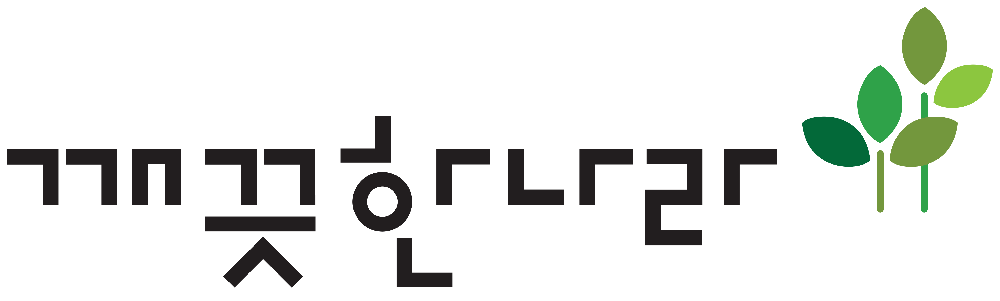

Key-Result
목표와 결과를 명확하게 연결합니다
CPC, CPV, 전환율을 교차 분석해 실제 성과를 만드는 인플루언서 유형을 정의했고, CPE 예측 기반의 전략적 시딩 기준을 제안해 운영 효율을 높였습니다.

깨끗한나라 Retail Portfolio for HL사업부 국내영업 직무KLEANNARA RETAIL PORTFOLIO
깨끗한나라가 지향하는 생활 혁신 솔루션의 방향을 국내영업 현장에서 실행하고 싶습니다. 분석으로 문제를 발견하고, 기준을 만들고, 사람을 설득해 실행까지 연결한 경험을 바탕으로 수도권 리테일 영업의 정확도와 속도를 높이겠습니다.

CANDIDATE PROFILE
Kleannara HL Retail Applicant
Kang Daseul
광고홍보학전공 · 미디어전공
Excel, PowerPoint, Word, Photoshop, Illustrator, Premiere Pro
ADsP · GAIQ · SNS광고마케터 1급 · AI-POT 1급 · GTQ(일러스트) 1급 · GTQ(포토샵) 1급 · 자동차운전면허 2종(운전경력 5년)
활동경력
VALUE FIT
깨끗한나라의 인재는 K.L.E.A.N하게 일합니다.
Key-Result
CPC, CPV, 전환율을 교차 분석해 실제 성과를 만드는 인플루언서 유형을 정의했고, CPE 예측 기반의 전략적 시딩 기준을 제안해 운영 효율을 높였습니다.
Learning
Python 기반 데이터 분석을 학습하고, 대용량 데이터를 전처리한 뒤 Streamlit 시각화까지 구현하며 분석을 실행 가능한 도구로 발전시켰습니다.
Ethics
데이터 불일치 원인을 추적해 동일 인플루언서 계정의 분산 관리 구조를 확인했고, 기준 테이블을 구축해 데이터 정합성을 약 15% 개선했습니다.
Agility
일부 계열사의 데이터 누락 문제가 이어지자 직접 담당자를 만나 분석 툴의 효과를 시연하며 협업을 설득했고, 5개월간 누락 없는 전사 데이터를 확보했습니다.
Network
서포터즈 팀장으로 개별 면담과 성과 공유를 통해 팀 몰입을 회복했고, 1.4천 조회수와 97명 참여를 만든 끝에 최우수팀 수상으로 연결했습니다.
SELECTED PROJECTS
문제를 구조화하고 기준을 세우며 실행까지 연결한 다섯 가지 프로젝트입니다. 각 경험의 마지막에는 깨끗한나라 HL사업부 리테일팀(국내영업) 직무에 어떻게 기여할 수 있는지 함께 정리했습니다.
아모레퍼시픽 브랜드전략팀 인턴사원
Situation 20여 개 브랜드의 SNS 데이터에서 인플루언서 식별 기준이 불일치하여 성과 지표 오류 및 잘못된 의사결정 가능성이 존재했습니다.
Task 데이터 정합성을 확보하고 브랜드 간 비교 가능한 분석 기준을 구축하는 것을 목표로 설정했습니다.
Action 피벗테이블 및 필터 기능을 활용해 중복 데이터를 탐지하고 구조를 재정의했으며, 동일 인플루언서를 통합하는 데이터 기준 필드를 설계했습니다. 이후 1개월간 샘플·기존 데이터를 교차 검증하고 팀 내 데이터 관리 가이드를 제작해 배포했습니다.
Result 비용 대비 인게이지먼트 지표를 정확히 도출할 수 있는 분석 환경을 구축했고, 데이터 기반 의사결정의 신뢰도를 확보했으며 업무 정합성을 약 15% 개선했습니다.
HL사업부 리테일팀 기여점 채널·거래처·프로모션 데이터를 동일한 기준으로 구조화해 지역별 판매 성과와 프로모션 효과를 정확히 비교하고, 국내영업 현장의 의사결정 정확도를 높이는 데 기여할 수 있습니다.
대홍기획 전략팀 인턴
Situation 반도체 산업의 복잡한 공정과 시장 구조로 인해 광고 전략 수립 시 핵심 메시지와 방향 설정이 어려운 상황이었습니다.
Task 사업·시장·경쟁사·고객 데이터를 통합 분석해 전략 수립에 활용 가능한 인사이트 구조를 만드는 것을 목표로 설정했습니다.
Action 반도체 제품 포트폴리오, 공정 과정, IT·AI 산업 동향을 분석하고 핵심 내용을 팩트북 형태로 구조화했습니다. 이후 팀 브리핑과 협력부서 공유를 통해 방향성을 맞췄고, 데스크 리서치의 한계를 보완하기 위해 전공생 대상 FGI도 수행했습니다.
Result 산업 및 고객 이해를 바탕으로 실행 가능한 전략 인사이트를 도출했고, 실제 광고 기획 방향 설정에 반영되는 경험을 확보했습니다.
HL사업부 리테일팀 기여점 시장·고객·경쟁 환경을 입체적으로 정리해 권역별 판매 전략과 유통 채널별 제안 포인트를 구체화하고, 국내영업 현장에서 설득력 있는 전략 수립에 기여할 수 있습니다.
마녀공장 마케팅팀 인턴
Situation 뷰티 인플루언서 한정 시딩으로 인해 인플루언서 및 콘텐츠 전략의 효율성이 제한적인 상황이었습니다.
Task 제품 USP와 타겟 고객을 기반으로 인플루언서 선정부터 콘텐츠, 프로모션까지 일관된 전략 구조를 설계하는 것을 목표로 했습니다.
Action 제품별 타겟에 맞는 인플루언서를 선정하고 시딩 전략을 운영했으며, USP 기반 콘텐츠 가이드라인 제작과 협업 관리를 맡았습니다. 콘텐츠 업로드, 광고법 준수, 노출 성과를 전 과정에서 모니터링했고 공식 SNS 신제품 런칭 이벤트도 기획·운영했습니다.
Result 제품별 타겟 인플루언서 전략으로 신규 소비자 접점을 확보했고 네이버 검색량이 상승했습니다. SNS 이벤트 운영을 통해 인게이지먼트를 42.6% 향상시켰습니다.
HL사업부 리테일팀 기여점 제품 특성과 고객군에 맞춘 판촉 기획 경험을 바탕으로 대리점·농협 채널별 프로모션을 정교하게 설계하고, 소비자 반응 데이터를 활용해 실행 효과를 지속적으로 개선할 수 있습니다.
LG유플러스 서포터즈 유대감 11기
Situation 통신사의 20대 전용 신규 브랜드가 낮은 인지도와 함께 메시지가 직관적으로 인식되지 않는 상황이었습니다.
Task 20대의 소비 패턴과 콘텐츠 소비 방식을 고려해 타겟 고객에게 자연스럽게 각인될 수 있는 브랜드 경험을 설계하고자 했습니다.
Action 20대 타겟의 콘텐츠 트렌드 및 행동 패턴을 분석하고, 서비스 USP인 ‘매월 20일 혜택’을 ‘생일처럼 선물 받는 경험’으로 재해석했습니다. 이후 ‘해피유쓰데이’ 콘셉트 아래 인스타그램 릴스 트렌드를 반영한 콘텐츠를 제작·실행했습니다.
Result 콘텐츠 조회수 약 1.6천 회를 달성했고 월 우수활동자로 선정됐습니다. 제안한 콘셉트는 현재까지도 브랜드 자산으로 지속 활용되고 있습니다.
HL사업부 리테일팀 기여점 고객 세그먼트별 구매 맥락을 반영한 메시지 설계 경험을 바탕으로, 채널과 상권 특성에 맞는 행사 콘셉트와 진열 포인트를 기획해 반복 방문과 구매 전환을 높일 수 있습니다.
삼양그룹 서포터즈 삼양씨즈 6기
Situation 초기 롱폼 콘텐츠와 이벤트의 참여율이 낮고 타겟 고객 도달 범위가 제한적인 상황이었습니다.
Task 콘텐츠 도달률을 확대하고 참여를 유도하기 위해 채널별 특성을 반영한 OSMU 전략을 설계했습니다.
Action 숏폼, 카드뉴스, 블로그 등 채널별 콘텐츠를 병행 운영했고, 콘텐츠와 참여형 이벤트를 결합해 고객 접점을 확대했습니다. 페르소나 SNS 계정을 직접 운영하며 약 1천 명의 타겟 팔로워를 확보했고, 채널별 반응을 바탕으로 콘텐츠 방향을 지속 개선했습니다.
Result 콘텐츠 조회수 약 1.4천 회와 이벤트 참여자 97명을 달성했으며, 참여율을 30% 이상 개선해 최우수활동팀으로 선정됐습니다.
HL사업부 리테일팀 기여점 유통 채널별 고객 접점을 다르게 설계하는 경험을 바탕으로 오프라인 프로모션과 디지털 커뮤니케이션을 연결하고, 매장 행사 홍보부터 고객 참여 확산까지 통합적으로 운영할 수 있습니다.
STRATEGY PROPOSAL
국내영업 현장에서 반복적으로 쌓이는 판매 데이터와 외부 수요 신호를 결합해,
“언제 어떤 상품을 어디에서 밀어야 하는지”를 더 빠르게 제안하는 시스템을 구상했습니다.
이는 깃허브와 바이브 코딩으로 직접 구현한 시스템으로, 입사 후 내부 판매데이터와 결합하여 더 고도화된
시스템을 구현하고 싶습니다.
Input Data
네이버 데이터랩 연동 대기 중
Model Logic
브랜드와 제품 카테고리를 함께 비교하면, 단순 인기 검색어보다 실제 영업 판단에 가까운 수요 신호를 더 정교하게 해석할 수 있습니다.
추천 점수는 최근 3개월 평균 검색 관심도, 직전 3개월 대비 상승률, 시즌성을 함께 반영해 계산한 영업 우선순위 지표입니다.
Suggested Output
Expected Impact
입사 후에는 브랜드별 수요 변화를 제품 카테고리 단위로 읽어 깨끗한나라가 경쟁사 대비 어떤 상품군에서 기회를 잡아야 하는지 더 빠르게 제안하는 국내영업 담당자가 되고 싶습니다.
CAREER ROADMAP
초기 적응에서 끝나지 않고, 데이터 기반 국내영업 체계를 구축해 나가는 흐름으로 성장의 과정을 단계별로 정리했습니다.
Goal Statement
데이터 기반 의사결정과 현장 실행력을 결합해, 깨끗한나라가 고객의 일상에 더 깊이 자리 잡도록 만드는 리테일 파트너가 되겠습니다.